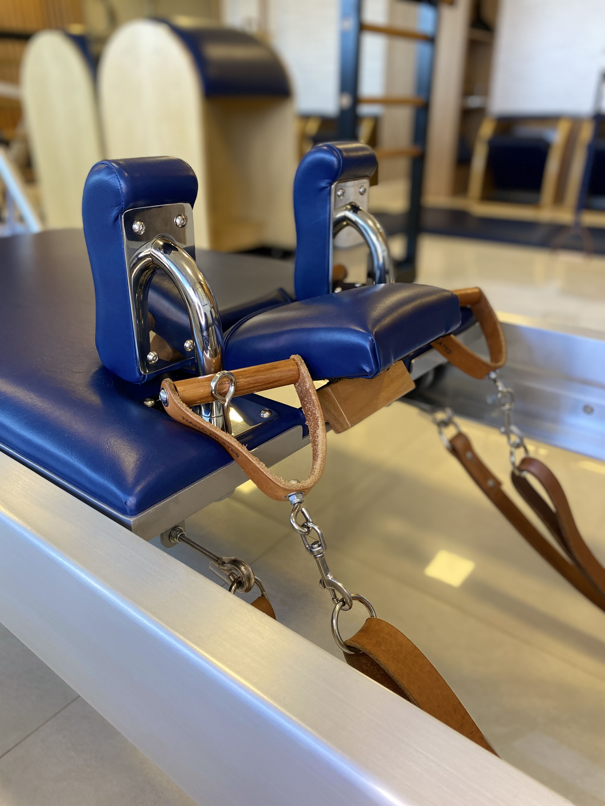
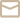

Nossa essência é fazer com que cada aluno se sinta único e especial, oferecendo um atendimento personalizado para atender às suas necessidades específicas.
No Le Classic Pilates, proporcionamos uma experiência de qualidade, promovendo bem-estar e superando expectativas.Valorizamos cada pessoa que entra em nosso estúdio e nos dedicamos a ajudá-las a alcançar seus objetivos de forma segura e eficaz, sempre com base no método Pilates Clássico.
Descubra o poder transformador do Pilates Clássico, inspirado no método tradicional criado por Joseph H. Pilates. Seguimos a técnica e metodologia originais dos exercícios e utilizamos equipamentos que respeitam as especificações do método clássico,promovendo uma prática autêntica e completa.
Praticar Pilates Clássico no Le Classic proporcionará a você:
Para oferecer esses benefícios, valorizamos as seguintes características:
|
|
 |
|
Atendimento individualizado e personalizado |
Ambiente clean, privativo e climatizado |
Equipamentos de altíssima qualidade |
Profissionais qualificados e dedicados |
| Cada aluno recebe atenção especial e uma orientação personalizada, adaptada às suas necessidades e objetivos, para garantir uma prática segura e eficaz. | Nosso ambiente é cuidadosamente projetado, com um espaço clean e climatizado, proporcionando conforto e bem-estar durante toda a prática. | Utilizamos equipamentos que seguem as especificações originais do método Pilates Clássico, assegurando a qualidade e a eficácia dos exercícios. | Nossa equipe é formada por profissionais experientes e altamente capacitados, comprometidos em oferecer uma experiência de excelência. |
|
Nosso estúdio é um espaço lindo, clean, privativo e aconchegante, projetado para o bem-estar físico e mental de nossos alunos. Oferecemos um ambiente tranquilo e acolhedor, onde o foco está no cuidado e na atenção com cada aluno. Estamos localizados no Centro Clínico Cléo Octávio, no início da Asa Norte, em Brasília. O edifício possui fácil acesso e excelente estrutura, oferecendo um espaço exclusivo para o seu conforto e cuidado com o corpo e a mente. |
||
| @leclassicpilates |
 contato@leclassicpilates.com.br |
|